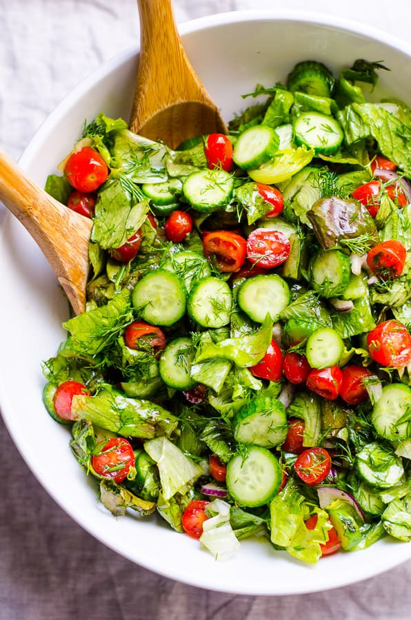

Recipes

source
source
{kind=link}
Everyday Salad
Ingredients:
- 1 medium English (1 lb) cucumbers
- 2 medium (1 lb) tomatoes
- 1 large bunch (1 lb) lettuce
- 1/4 cup red onion
- 1 small bunch dill
- 1 tbsp extra virgin olive oil
- 1 tbsp red wine vinegar
- 1 lemon, juiced
Directions:
- Rinse and chop cucumbers, lettuce, onion, tomatoes.
- Whisk together oil, vinegar, lemon juice, salt, pepper, and dill and pour over salad.

source
{kind=link}
Avocado Toast
Ingredients:
- 1 slice bread
- 1 egg
- 1/2 small riped avocado
- 1/2 tablespoon unsalted butter
- 1 teaspoon chopped parsley
- black pepper and salt
Directions:
- Pop the toast in the toaster.
- Heat a skillet, melt the butter over low heat and crack the egg into the skillet. Cook the egg until the white is opaque, about 3 to 4 minutes.
- Slice the avocado in half. Remove the pit and skin. Slice the avocado and spread them on the toast.
- Top the avocado with the cooked egg and season it with the parsley, salt and pepper as desired.

source
{kind=link}
Icae Matcha Latte
Ingredients:
- 2 teaspoons matcha powder
- 1–2 tablespoons warm/hot water
- 1 cup almond milk
- 2 teaspoons honey (depending on how sweet you like it)
- 1/2 cup ice cubes
Directions:
- In a small bowl, whisk the matcha with warm/hot water until smooth.
- Fill a glass with ice.
- Add the milk, honey and matcha mixture.
- Stir until combined and enjoy!